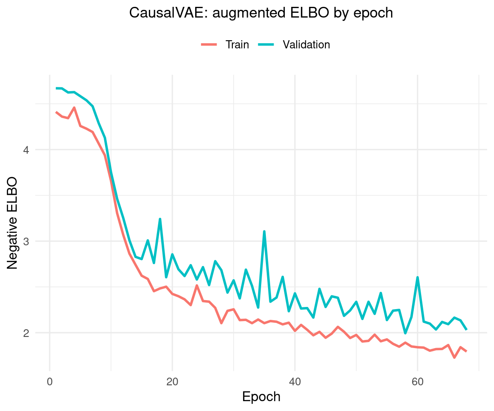

Code
packages <- c(
"torch",
"progress",
"ggplot2",
"corrplot",
"coro",
"RCausalML",
"tidyverse"
)
This notebook provides a detailed guide to implementing and applying the Causal Variational Autoencoder (CausalVAE) in R, following the architecture introduced in “CausalVAE: Disentangled Representation Learning via Neural Structural Causal Models” (Yang et al., CVPR 2021). We cover the theoretical motivation, a full torch-based implementation via the {RCausalML} package, and an application to Average Treatment Effect (ATE) estimation on synthetic data with a known causal ground truth.
Standard VAEs — and even identifiable VAEs such as iVAEs — assume that the latent dimensions are statistically independent. This is a convenient mathematical assumption, but it conflicts with how the world actually generates data: causes produce effects, and latent factors are often related by causal mechanisms rather than being simply correlated or independent.
CausalVAE addresses this by embedding a Structural Causal Model (SCM) directly in the latent space. Where a standard VAE encodes \(x\) to a vector of independent noise variables \(\varepsilon\) and decodes back, CausalVAE adds a causal layer between the encoder and decoder that transforms the independent \(\varepsilon\) into causally structured latent variables \(z\) according to a learnable Directed Acyclic Graph (DAG). The result is a generative model whose latent space is not just disentangled — it is causally disentangled, meaning each latent dimension corresponds to a distinct node in a causal graph, and the learned edges describe how those nodes causally influence one another.
This structure enables operations that are impossible in standard VAEs:
CausalVAE separates the latent space into two layers with distinct roles:
Exogenous variables \(\varepsilon\): Independent noise sources with prior \(p(\varepsilon) = \mathcal{N}(0, I)\). These are what the encoder directly outputs — a representation that is, by construction, free of causal dependencies.
Endogenous variables \(z\): Causally generated from \(\varepsilon\) via the learned SCM. Each \(z_i\) is a function of its parents in the DAG plus its own exogenous noise \(\varepsilon_i\).
The forward pass therefore has an additional step compared to a standard VAE: after sampling \(\varepsilon\), the causal layer applies the structural equations to produce \(z\), and the decoder then reconstructs \(x\) from \(z\).
The causal layer implements the structural equations of the SCM. In the linear case:
\[z = (I - A \odot M)^{-1} \varepsilon\]
where \(A\) is a matrix of learnable real-valued edge weights and \(M\) is a binary mask that determines which edges are structurally permitted. In practice, this inversion is replaced by an additive fixed-point iteration:
\[z = \varepsilon + (A \odot M)\, z\]
Because \(z\) must follow a DAG (no cycles), the matrix \(A \odot M\) must be nilpotent, which is enforced by a continuous differentiable DAG penalty on \(A\):
\[h(A) = \mathrm{tr}\!\left(\exp(A \circ A)\right) - d\]
where \(d\) is the number of latent dimensions. This penalty equals zero if and only if \(A \circ A\) has no positive-weight cycles, i.e., \(A\) encodes a DAG. It is added to the loss with a Lagrange multiplier \(\gamma\), giving the optimizer a continuous incentive to push the learned graph toward acyclicity without requiring discrete search.
The complete forward pass is:
\[x \;\xrightarrow{\text{encoder}}\; (\mu_\varepsilon, \log\sigma^2_\varepsilon) \;\xrightarrow{\text{reparam.}}\; \varepsilon \;\xrightarrow{\text{causal layer}}\; z \;\xrightarrow{\text{decoder}}\; (\mu_x, \log\sigma^2_x)\]
The encoder outputs parameters of a Gaussian over \(\varepsilon\) (not \(z\) directly). The decoder receives the causally structured \(z\) (not \(\varepsilon\)). This separation means the KL divergence is computed in the \(\varepsilon\) space against \(\mathcal{N}(0,I)\), keeping that term tractable, while the causal structure lives entirely in the transformation \(\varepsilon \to z\).
The training objective is a \(\beta\)-VAE ELBO augmented with causal regularizers:
\[\mathcal{L} = \underbrace{\mathbb{E}_{q(\varepsilon|x)}\!\left[\log p(x \mid z)\right]}_{\text{reconstruction}} - \underbrace{\beta\, D_{\mathrm{KL}}\!\left(q(\varepsilon \mid x) \,\|\, \mathcal{N}(0,I)\right)}_{\text{KL regularization}} - \underbrace{\gamma\!\left(h(A) + \lambda \|A\|_1\right)}_{\text{DAG + sparsity penalty}}\]
The three terms serve distinct purposes:

The causal layer deserves its own close-up showing how the DAG transforms ε into z.

CausalVAE, like iVAE, faces identifiability challenges. Without additional constraints, the latent space can be arbitrarily rotated. In practice, the paper addresses this through weak supervision: the training procedure uses partial knowledge of the causal graph (e.g., which edges are forbidden, or which interventional experiments have been performed) to anchor the latent space. In the implementation below, the synthetic data is generated from a known causal chain, giving us ground-truth latents against which to evaluate the learned representation.
Once trained, an intervention \(\mathrm{do}(z_i = v)\) is carried out by:
This is the mechanism that enables ATE estimation: intervene on the treatment node, observe the change in the outcome node, and average over the data distribution.
Following R packages are required to run this notebook. If any of these packages are not installed, you can install them using the code below:
torch, progress, ggplot2, corrplot, coro, RCausalML, tidyverse
packages <- c(
"torch",
"progress",
"ggplot2",
"corrplot",
"coro",
"RCausalML",
"tidyverse"
)# Install missing packages
# new_packages <- packages[!(packages %in% installed.packages()[, "Package"])]
# if (length(new_packages)) install.packages(new_packages)# Load packages with suppressed messages
invisible(lapply(packages, function(pkg) {
suppressPackageStartupMessages(library(pkg, character.only = TRUE))
}))# Check loaded packages
cat("Successfully loaded packages:\n")Successfully loaded packages: [1] "package:lubridate" "package:forcats" "package:stringr"
[4] "package:dplyr" "package:purrr" "package:readr"
[7] "package:tidyr" "package:tibble" "package:tidyverse"
[10] "package:RCausalML" "package:coro" "package:corrplot"
[13] "package:ggplot2" "package:progress" "package:torch"
[16] "package:stats" "package:graphics" "package:grDevices"
[19] "package:utils" "package:datasets" "package:methods"
[22] "package:base" device <- if (torch::cuda_is_available()) "cuda" else "cpu"
cat("Using device:", device, "\n")Using device: cuda set.seed(42)
torch::torch_manual_seed(42L)We generate synthetic data from a known three-node causal chain \(z_1 \to z_2 \to z_3\) with nonlinear structural equations:
\[z_1 = \varepsilon_1, \qquad z_2 = z_1 + \varepsilon_2, \qquad z_3 = z_2^2 + \varepsilon_3\]
Observations \(x\) are a nonlinear mix of the causal latents, ensuring that the true causal structure cannot be read off from \(x\) directly and must be recovered from the learned representation. Having access to the ground-truth latents \(z\) allows us to directly evaluate whether the causal layer has learned the correct graph.
generate_data <- function(n_samples = 5000L, latent_dim = 3L) {
epsilon_mat <- matrix(rnorm(n_samples * latent_dim),
nrow = n_samples, ncol = latent_dim)
z_mat <- matrix(0.0, nrow = n_samples, ncol = latent_dim)
x_mat <- matrix(0.0, nrow = n_samples, ncol = latent_dim)
# Causal chain: z1 -> z2 -> z3
z_mat[, 1] <- epsilon_mat[, 1]
z_mat[, 2] <- z_mat[, 1] + epsilon_mat[, 2]
z_mat[, 3] <- z_mat[, 2]^2 + epsilon_mat[, 3]
# Nonlinear observation model
x_mat[, 1] <- z_mat[, 1] * z_mat[, 3]
x_mat[, 2] <- sin(z_mat[, 2]) + z_mat[, 1]
x_mat[, 3] <- z_mat[, 3]^2 + rnorm(n_samples, 0, 0.1)
list(
x = torch_tensor(x_mat, dtype = torch_float(), device = device),
z = torch_tensor(z_mat, dtype = torch_float(), device = device),
epsilon = torch_tensor(epsilon_mat, dtype = torch_float(), device = device)
)
}
synthetic_data <- generate_data(n_samples = 5000L)
x <- synthetic_data$x
true_z <- synthetic_data$z
true_epsilon <- synthetic_data$epsilon
# Standardize observations
normalize_data <- function(x) {
mean_val <- x$mean(dim = 1L)
std_val <- x$std(dim = 1L)
list(x_norm = (x - mean_val) / std_val, mean = mean_val, std = std_val)
}
norm_result <- normalize_data(x)
x_norm <- norm_result$x_norm
x_mean <- norm_result$mean
x_std <- norm_result$std
# 80/10/10 train–validation–test split
n_samples <- nrow(x_norm)
train_size <- as.integer(0.8 * n_samples)
val_size <- as.integer(0.1 * n_samples)
x_train <- x_norm[1:train_size, ]
x_val <- x_norm[(train_size + 1):(train_size + val_size), ]
x_test <- x_norm[(train_size + val_size + 1):n_samples, ]
true_z_train <- true_z[1:train_size, ]
true_z_val <- true_z[(train_size + 1):(train_size + val_size), ]
true_z_test <- true_z[(train_size + val_size + 1):n_samples, ]
cat(sprintf("Train: %d | Val: %d | Test: %d\n",
nrow(x_train), nrow(x_val), nrow(x_test)))Train: 4000 | Val: 500 | Test: 500The CausalVAE() constructor (from {RCausalML}) builds the encoder, causal layer, and decoder. The loss_function() computes the full augmented ELBO including the DAG penalty and sparsity regularizer.
We use a learning rate scheduler that halves the learning rate when validation loss plateaus, and a LR warmup phase in the first 10 epochs to prevent the DAG penalty from dominating before the reconstruction loss has stabilized.
Model class : CausalVAEDevice : cudaMax epochs : 200 (with early stopping)Initial LR : 1e-03The training loop implements several practical stability measures:
train_losses <- numeric(epochs)
val_losses <- numeric(epochs)
# Hyperparameters
learning_rate <- 2e-4
min_learning_rate <- 5e-6
weight_decay <- 1e-5
batch_size <- 128L
epochs <- 250L
warmup <- 50L # epochs over which gamma ramps up
lr_warmup_epochs <- 10L
gamma_scale_cap <- 0.35
grad_clip_max <- 0.5
loss_skip_threshold <- 50.0
optimizer <- optim_adam(model$parameters, lr = learning_rate, weight_decay = weight_decay)
scheduler <- lr_reduce_on_plateau(optimizer, mode = "min", factor = 0.5,
patience = 8, min_lr = min_learning_rate)
train_dataset <- torch::tensor_dataset(x_train)
train_loader <- torch::dataloader(train_dataset, batch_size = batch_size, shuffle = TRUE)
val_dataset <- torch::tensor_dataset(x_val)
val_loader <- torch::dataloader(val_dataset, batch_size = batch_size, shuffle = FALSE)
if (!requireNamespace("coro", quietly = TRUE))
stop("Package 'coro' is required: install.packages('coro')")
best_val_loss <- Inf
early_stopping_patience <- 10
early_stopping_counter <- 0
best_model_path <- tempfile("causalvae_best_", fileext = ".pt")
save_best_model <- function(model, path) torch::torch_save(model$state_dict(), path)
for (epoch in 1:epochs) {
# LR warmup: scale up from 0 to learning_rate over the first lr_warmup_epochs
if (epoch <= lr_warmup_epochs)
optimizer$param_groups[[1]]$lr <- learning_rate * (epoch / lr_warmup_epochs)
# Gradually introduce the DAG penalty, capped to avoid post-valley instability
gamma_scale <- min(gamma_scale_cap, (epoch + 1) / warmup)
# ── Training phase ────────────────────────────────────────────────────────
model$train()
epoch_train_loss <- 0.0
batch_count <- 0
for (batch in coro::collect(train_loader)) {
x_batch <- (if (is.list(batch)) batch[[1]] else batch)$to(device = device)
optimizer$zero_grad()
out <- model$forward(x_batch)
loss <- loss_function(x_batch,
out$dec_mu, out$dec_logvar,
out$enc_mu, out$enc_logvar,
model, gamma_scale = gamma_scale)
loss_val <- loss$item()
if (!is.finite(loss_val)) {
cat(sprintf("Warning: non-finite loss at epoch %d, skipping batch\n", epoch))
next
}
if (loss_val > loss_skip_threshold) {
cat(sprintf("Warning: loss %.1f > threshold %.1f at epoch %d, skipping\n",
loss_val, loss_skip_threshold, epoch))
next
}
loss$backward()
tryCatch(
nn_utils_clip_grad_norm_(model$parameters, max_norm = grad_clip_max),
error = function(e) { optimizer$zero_grad(); cat("Gradient clip error — zeroed grads\n") }
)
optimizer$step()
epoch_train_loss <- epoch_train_loss + loss_val
batch_count <- batch_count + 1
}
train_losses[epoch] <- if (batch_count > 0) epoch_train_loss / batch_count else NA
# ── Validation phase ──────────────────────────────────────────────────────
model$eval()
epoch_val_loss <- 0.0
val_batch_count <- 0
with_no_grad({
for (val_batch in coro::collect(val_loader)) {
x_v <- (if (is.list(val_batch)) val_batch[[1]] else val_batch)$to(device = device)
out <- model$forward(x_v)
loss <- loss_function(x_v,
out$dec_mu, out$dec_logvar,
out$enc_mu, out$enc_logvar,
model, gamma_scale = gamma_scale)
lv <- loss$item()
if (is.finite(lv)) {
epoch_val_loss <- epoch_val_loss + lv
val_batch_count <- val_batch_count + 1
}
}
})
val_losses[epoch] <- if (val_batch_count > 0) epoch_val_loss / val_batch_count else NA
# ── Scheduler + early stopping ────────────────────────────────────────────
vl <- if (is.finite(val_losses[epoch])) val_losses[epoch] else Inf
scheduler$step(vl)
if (vl < best_val_loss - 1e-5) {
best_val_loss <- vl
early_stopping_counter <- 0
save_best_model(model, best_model_path)
} else {
early_stopping_counter <- early_stopping_counter + 1
}
if (early_stopping_counter >= early_stopping_patience) {
cat(sprintf("Early stopping at epoch %d (no improvement for %d epochs)\n",
epoch, early_stopping_patience))
break
}
if (epoch == 1 || epoch %% 5 == 0) {
lr <- optimizer$param_groups[[1]]$lr
cat(sprintf("Epoch %3d — train: %.4f val: %.4f lr: %.2e γ: %.3f\n",
epoch, train_losses[epoch], val_losses[epoch], lr, gamma_scale))
}
}Epoch 1 — train: 4.4117 val: 4.6697 lr: 2.00e-05 γ: 0.040
Epoch 5 — train: 4.2580 val: 4.5828 lr: 1.00e-04 γ: 0.120
Epoch 10 — train: 3.6604 val: 3.7517 lr: 2.00e-04 γ: 0.220
Epoch 15 — train: 2.6224 val: 2.8043 lr: 2.00e-04 γ: 0.320
Epoch 20 — train: 2.4237 val: 2.8555 lr: 2.00e-04 γ: 0.350
Epoch 25 — train: 2.3458 val: 2.7160 lr: 2.00e-04 γ: 0.350
Epoch 30 — train: 2.2552 val: 2.5716 lr: 2.00e-04 γ: 0.350
Epoch 35 — train: 2.1043 val: 3.1067 lr: 2.00e-04 γ: 0.350
Epoch 40 — train: 2.0203 val: 2.4295 lr: 2.00e-04 γ: 0.350
Epoch 45 — train: 1.9448 val: 2.2814 lr: 2.00e-04 γ: 0.350
Epoch 50 — train: 1.9755 val: 2.3370 lr: 2.00e-04 γ: 0.350
Epoch 55 — train: 1.9266 val: 2.1383 lr: 2.00e-04 γ: 0.350
Epoch 60 — train: 1.8411 val: 2.6050 lr: 2.00e-04 γ: 0.350
Epoch 65 — train: 1.8651 val: 2.0931 lr: 2.00e-04 γ: 0.350
Early stopping at epoch 68 (no improvement for 10 epochs)actual_epochs <- epoch
if (file.exists(best_model_path))
model$load_state_dict(torch::torch_load(best_model_path))The plot below shows the negative ELBO over training. A well-behaved run exhibits three phases: a rapid initial decline as the reconstruction loss improves; a mid-training inflection as the DAG penalty activates and temporarily increases the loss; and a final convergence as the graph structure stabilizes and the ELBO settles. Early stopping ensures that we restore the checkpoint from the first loss valley rather than continuing into a noisier regime.
epoch_df <- data.frame(
Epoch = 1:actual_epochs,
Train_Loss = train_losses[1:actual_epochs],
Val_Loss = val_losses[1:actual_epochs]
)
epoch_df <- epoch_df[!is.na(epoch_df$Train_Loss) & !is.na(epoch_df$Val_Loss), ]
ggplot(epoch_df, aes(x = Epoch)) +
geom_line(aes(y = Train_Loss, color = "Train"), linewidth = 1.0) +
geom_line(aes(y = Val_Loss, color = "Validation"), linewidth = 1.0) +
labs(
title = "CausalVAE: augmented ELBO by epoch",
x = "Epoch", y = "Negative ELBO", color = ""
) +
theme_minimal(base_size = 12) +
theme(plot.title = element_text(hjust = 0.5, size = 13),
legend.position = "top")
Because the learned latent space has explicit causal structure, ATE estimation reduces to a simple intervention: set the treatment node \(T\) to 1 (treated) versus 0 (control), hold all exogenous noise \(\varepsilon\) fixed, propagate through the DAG, and read off the expected change in the outcome. This is the do-calculus \(\mathrm{do}(T = t)\) operationalized directly on the learned graph, without needing a separate propensity model or outcome regression.
In the synthetic setting below, treatment \(T\) acts on \(z_1\) and the outcome \(Y\) is generated as \(Y = z_3 + T \cdot 0.5 \cdot z_2 + \varepsilon_Y\), giving a true ATE of \(0.5 \cdot \mathbb{E}[z_2]\).
generate_data_with_treatment <- function(n_samples = 5000L, latent_dim = 3L) {
epsilon_mat <- matrix(rnorm(n_samples * latent_dim), nrow = n_samples, ncol = latent_dim)
z_mat <- matrix(0.0, nrow = n_samples, ncol = latent_dim)
z_mat[, 1] <- epsilon_mat[, 1]
z_mat[, 2] <- z_mat[, 1] + epsilon_mat[, 2]
z_mat[, 3] <- z_mat[, 2]^2 + epsilon_mat[, 3]
T_vec <- rbinom(n_samples, 1, 0.5)
Y_vec <- z_mat[, 3] + T_vec * 0.5 * z_mat[, 2] + rnorm(n_samples, 0, 0.1)
x_mat <- matrix(0.0, nrow = n_samples, ncol = latent_dim)
x_mat[, 1] <- z_mat[, 1] * z_mat[, 3]
x_mat[, 2] <- sin(z_mat[, 2]) + z_mat[, 1]
x_mat[, 3] <- z_mat[, 3]^2 + rnorm(n_samples, 0, 0.1)
list(
x = torch_tensor(x_mat, dtype = torch_float(), device = device),
z = torch_tensor(z_mat, dtype = torch_float(), device = device),
epsilon = torch_tensor(epsilon_mat, dtype = torch_float(), device = device),
T = torch_tensor(matrix(T_vec, ncol = 1), dtype = torch_float(), device = device),
Y = torch_tensor(matrix(Y_vec, ncol = 1), dtype = torch_float(), device = device)
)
}
ate_data <- generate_data_with_treatment(n_samples = 5000L)
x_ate <- ate_data$x
z_ate <- ate_data$z
T_ate <- ate_data$T
Y_ate <- ate_data$Y
x_ate_norm <- normalize_data(x_ate)$x_norm
train_size_ate <- as.integer(0.8 * nrow(x_ate_norm))
val_size_ate <- as.integer(0.1 * nrow(x_ate_norm))
x_ate_test <- x_ate_norm[(train_size_ate + val_size_ate + 1):nrow(x_ate_norm), ]
z_ate_test <- z_ate[(train_size_ate + val_size_ate + 1):nrow(z_ate), ]
T_ate_test <- T_ate[(train_size_ate + val_size_ate + 1):nrow(T_ate), ]
Y_ate_test <- Y_ate[(train_size_ate + val_size_ate + 1):nrow(Y_ate), ]
# True ATE: E[0.5 * z2] over the test set
true_ate <- (0.5 * z_ate_test[, 2])$mean()$item()
cat(sprintf("True ATE (test set): %.4f\n", true_ate))True ATE (test set): 0.0509CausalVAE_ATE extends the base model with a linear outcome head \(\mathbb{E}[Y \mid z, T]\). The outcome head is trained jointly with the VAE objective, so the latent representation learns to encode variation that is relevant for predicting \(Y\) — not just for reconstructing \(x\).
x_ate_train <- x_ate_norm[1:train_size_ate, ]
T_ate_train <- T_ate[1:train_size_ate, ]
Y_ate_train <- Y_ate[1:train_size_ate, ]
ate_dataset <- torch::tensor_dataset(x_ate_train, T_ate_train, Y_ate_train)
ate_loader <- torch::dataloader(ate_dataset, batch_size = 256L, shuffle = TRUE)
model_ate <- CausalVAE_ATE(
input_dim = dim(x_ate_norm)[2],
latent_dim = dim(z_ate)[2],
hidden_dim = 64L,
beta = 1.0,
gamma = 1.0,
lambda_sparsity = 0.1
)$to(device = device)
optimizer_ate <- optim_adam(model_ate$parameters, lr = 1e-3)
for (epoch in 1:100) {
model_ate$train()
for (batch in coro::collect(ate_loader)) {
x_b <- batch[[1]]$to(device = device)
t_b <- batch[[2]]$to(device = device)
y_b <- batch[[3]]$to(device = device)
optimizer_ate$zero_grad()
out <- model_ate$forward(x_b, t_b)
loss_vae <- loss_function(x_b, out$dec_mu, out$dec_logvar,
out$enc_mu, out$enc_logvar, model_ate)
loss_mse <- nnf_mse_loss(out$y_pred, y_b)
(loss_vae + loss_mse)$backward()
tryCatch(nn_utils_clip_grad_norm_(model_ate$parameters, max_norm = 1.0),
error = function(e) NULL)
optimizer_ate$step()
}
if ((epoch + 1) %% 50 == 0)
cat(sprintf("Epoch %d: VAE + MSE loss computed.\n", epoch + 1))
}Epoch 50: VAE + MSE loss computed.
Epoch 100: VAE + MSE loss computed.# ATE estimation: E[Y|do(T=1)] - E[Y|do(T=0)] via the learned outcome head
estimate_ate_CausalVAE_ATE <- function(model, n_samples = 500L,
treatment_dim = 1L, device = "cpu") {
model$eval()
z_samples <- torch_randn(n_samples, model$latent_dim, device = device)
t_ones <- torch_ones(n_samples, treatment_dim, device = device)
t_zeros <- torch_zeros(n_samples, treatment_dim, device = device)
zt1 <- torch_cat(list(z_samples, t_ones), dim = 2L)
zt0 <- torch_cat(list(z_samples, t_zeros), dim = 2L)
y1 <- as.numeric(model$outcome_head$forward(zt1)$squeeze())
y0 <- as.numeric(model$outcome_head$forward(zt0)$squeeze())
mean(y1) - mean(y0)
}
pred_ate <- estimate_ate_CausalVAE_ATE(model_ate, n_samples = 500L,
treatment_dim = 1L, device = device)
cat(sprintf("Predicted ATE : %.4f\n", pred_ate))Predicted ATE : 0.0313True ATE : 0.0509Absolute error: 0.0197CausalVAE combines the expressive power of variational autoencoders with the structural guarantees of causal graphical models. By embedding a learnable DAG directly in the latent space, it enables a form of representation learning that goes beyond statistical disentanglement to causal disentanglement: each latent dimension corresponds to a distinct node in a causal graph, and the learned edges describe how those nodes influence one another.
The practical consequences are significant. Interventions on the latent space are well-defined (via do-calculus on the learned DAG), counterfactuals can be computed by fixing \(\varepsilon\) and modifying \(z\), and ATE estimation reduces to a simple evaluation of the outcome head under two interventional distributions. These capabilities are unavailable in CEVAE, iVAE, or standard VAEs.
The main practical challenges are identifiability (which typically requires weak supervision from partial graph knowledge or interventional data), training stability (the DAG penalty requires careful scheduling to avoid disrupting reconstruction early in training), and scalability (the matrix exponential penalty is \(O(d^3)\) in the latent dimension \(d\), so very large latent spaces are expensive to regularize).
For production applications: use weak supervision whenever any partial graph knowledge is available; monitor the DAG penalty and reconstruction loss separately to diagnose convergence issues; and validate the learned graph against any available domain knowledge before trusting the inferred causal structure for downstream decisions.